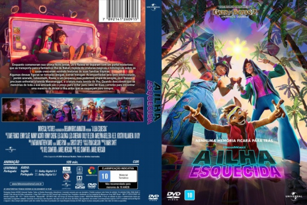

![link to A Ilha Esquecida [Autorado] on Rotten Tomatoes](../img/tomatoes.png)
![link to A Ilha Esquecida [Autorado] on TheMovieDb](../img/themoviedb.png)

Outro Título:Forgotten Island
País:United States, 109 minutos
Idiomas falados:Inglês, Português
Gênero(s):Animação, Aventura, Fantasia, Comédia, Família
Diretor(s):Januel Mercado, Joel Crawford
Escritor(es):Joel Crawford, Januel Mercado
Codec:MPEG-2 (DVD)
Número: 5977


Certificado:10
Sinopse:
Enquanto comemoram sua última noite juntas, Jo e Raissa se deparam com um portal misterioso que as transporta para a fantástica ilha de Nakali, repleta de criaturas mágicas e mitológicas sobre as quais cresceram ouvindo histórias de suas famílias filipinas.
Algumas dessas figuras se tornarão amigas, outras inimigas. Acompanhadas pelo bem-intencionado, porém azarado, lobisomem, Raww, e um pequeno, mas poderoso grupo de amigos, Jo e Raissa precisam enfrentar a temida Manananggal, a criatura mais temida da ilha. Quando descobrem que as memórias de toda a sua amizade são o preço para voltar para casa, as duas correrão para encontrar uma maneira de deixar a ilha antes que se esqueçam para sempre.
Elenco:
Tipo de mídia: DVD5,
Legendas: Português, Sem Legendas
Alugado: Não
Tela: Anamorphic Widescreen